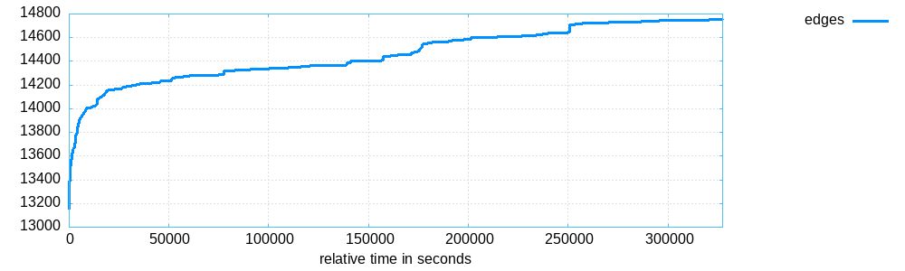
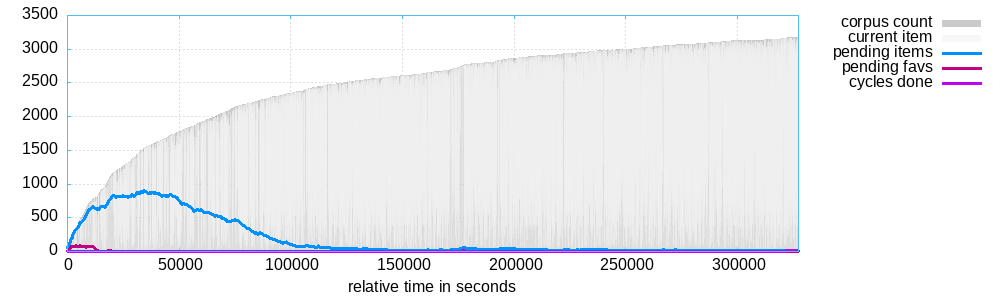
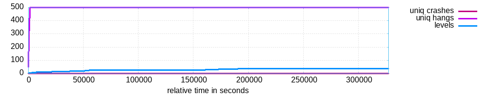
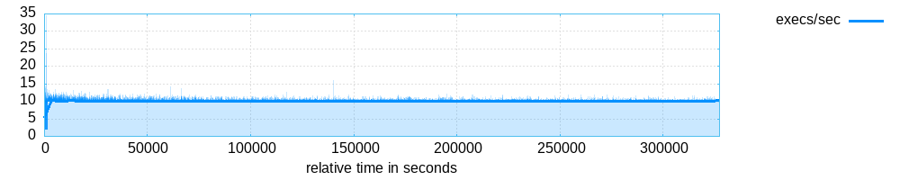

<table style="font-family: 'Trebuchet MS', 'Tahoma', 'Arial', 'Helvetica'">
<tr><td style="width: 18ex"><b>Banner:</b></td><td>...sim_fuzz/qemu/build/qemu-system-aarch64</td></tr>
<tr><td><b>Directory:</b></td><td>/home/alisher/arm_sim_fuzz/output_custom/default</td></tr>
<tr><td><b>Generated on:</b></td><td>Mo 16. Dez 13:04:31 CET 2024</td></tr>
</table>
<p>

<p>
<p>


